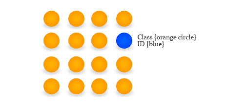
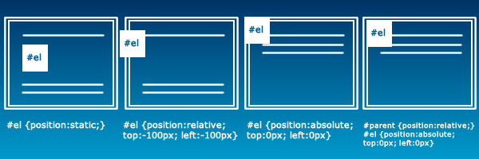

Let's Define What Css Is
CSS stands for Cascading Style Sheets and it was created to be HTML’s style expert. Pre-CSS, HTML was like so boring, pages were rendered with basic styling options and the developer had to hard-code them into the HTML; it needed a major wardrobe change. When CSS got it’s skin in the game, it started with very little skin and had a very slow adoption rate; CSS was like the Violent Femmes of programming style sheet languages. What CSS was offering was a separation of content/structure(HTML) and style(CSS). The power in this is you can easily apply a certain style to multiple pages and changing the style on the fly is much easier; HTML got a bunch of clothes and organized its closet; wow HTML, you look good!
CSS has control over all the properties of HTML elements; it’s like having your own personal seamstress who can change the fit, color, style, pattern, etc of your clothes, on the fly. For instance, if you have an HTML p tag filled with text, you can choose a font size for it like this:
p { font-size: 16px; }
CSS uses a key : value system, where the key is the property you want to change and the value is what you want to change it to. In the above example, p is selecting the element you with to select, font-size is a property(key) of p tags, 16px is the value you wish to change it to and the brackets simply wrap it all up; it's the hot-dog bun of the CSS meal.
Margin, Border, Padding; What's The Differance
CSS handles HTML elements like boxes, and with these boxes you can modify the perimeters of its sides. Here is a visual guide to help you:

- Content
- A property of the box model that wraps the raw element boundry, before any padding or margins are added; It's like your house
- Padding
- A property of the box model that gives your element some room to breath; it's the equivalent of a yard.
- Border
- A property of the box model that allows you to display the outside borders of your element, which includes the content and the padding. It's the Donald Trump of the box model; let's build a wall!
- Margin
- This is like your force-field, it's not part of the element but it protects the element from it's neighbors; stay off my lawn!
It can be confusing knowing when to use padding as opposed to margins and honestly, I still need to experiment more with the differances of both.
Some people Got Class, Others Have An Id
In CSS you add your own code-names for the elements in your HTML file. This is done by either giving the elelment an Id or a Class; or both, let's go crazy! You would give an element an Id when you want to isolate something that only occures once in the structure of your HTML, like a header navigation bar. On the other hand you use classes for elements that you find yourself describing over and over again in the HTML. Class and Id's allow you to easly select and isolate elements that share similar functionality; like you may have a bunch of h3 tags, but half have a class of super-big and half have a class of not-so-big, while they all have seporate Id names:
<h3 class="super-big" id="blah">blah</h3>
<h3 class="super-big" id="bleh">bleh</h3>
<h3 class="super-big" id="blue">blue</h3>
<h3 class="not-so-big" id="blee">blee</h3>
<h3 class="not-so-big" id="blie">blie</h3>
<h3 class="not-so-big" id="blue">blua</h3>
By giving the each element an Id you can select every one of these h3 tags using using Css; For example;
#blah { font-size: 1px;}
#bleh { font-size: 2px;}
This would cause the h3 tag with an Id of blah to be rendered at 1px, while bleh would render at 2px.
"#" stands for Id and "." stands for class.
Using classes in CSS is just as easy. We can isolate the h3 tags with a class of super-big and give them a font size of 100px, like this:
.super-big { font-size: 1px;}
Okay, may a 100px is a little to big; not if its a billboard though; then it's probably to small.
Let's position Some Stuff
CSS offers four differant positioning attributes for HTML elements, these include:
- Static
- Shapeless, formless, like water, also the default value for position. It follows the normal flow of the page. The properties of top, bottom, right, left do not have any effect on an element that's statically positioned; Become like water my friend!
- Relative
- Positioned relative to its natural(static) position. This allows you to move it around its natural position. Other content will not adjust their self for relativley moved elements. It's like static except the properties: top, bottom, left, right work.
- Fixed
- Positioned relative to the viewpoint. It's like having a bug on your screen, it stays in the same place even if you scroll. Putting a bottom property with a value of zero, would place the element at the bottom of the page.
- Absolute
- Define a playpen for your element to move around in. Absolute positions the element relative to its nearest positioned ancestor, as opposed to the view-port or its natural position.
WHat's The Differance Between Display and Display-Block?
- Inline
-
- respect left & right margins and padding, but not top & bottom.
- cannot have a width and height set.
- allow other elements to sit to their left and right.
- Inline-block
-
- allow other elements to sit to their left and right.
- respect top & bottom margins and padding.
- respect height and width.
This Post Was Way Too Long, Just End It Already!
- Things That We Learned:
-
- CSS allows us to seporate the styling from the content/structure.
- Elements adhere to the box-model, which includes: content, padding, border and margin.
- Ids should be used on elements that will only appear once in the application.
- Classes should be used to describe elements that have repeated usage through out the program.
- Static positioning is the default and just goes with the natural flow of the document.
- Relative allows you to modify the staic position.
- Fixed is the bug on the windshield.
- Absolute allows you to position an element inside its parent class.
- Display inline-block respect top, bottom, height, width; while inline does not.
- Congratulations on finishing! Here's a cookie: